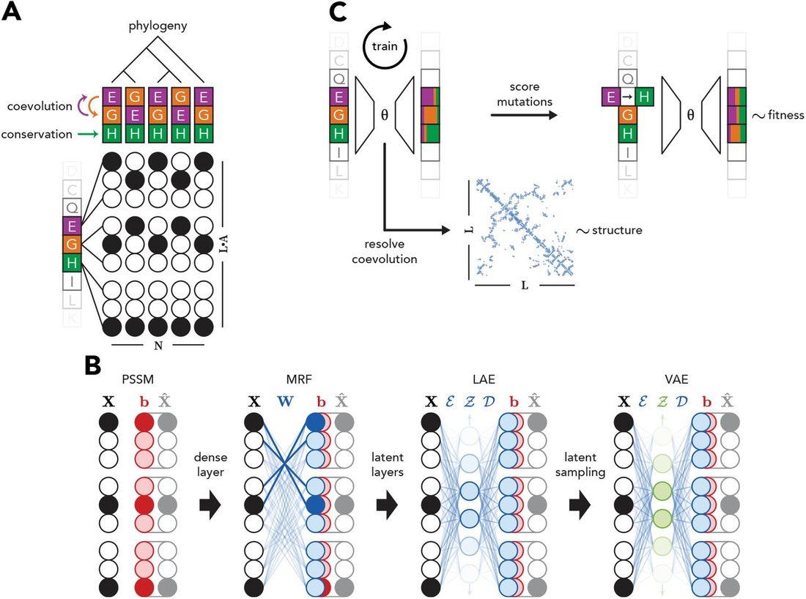
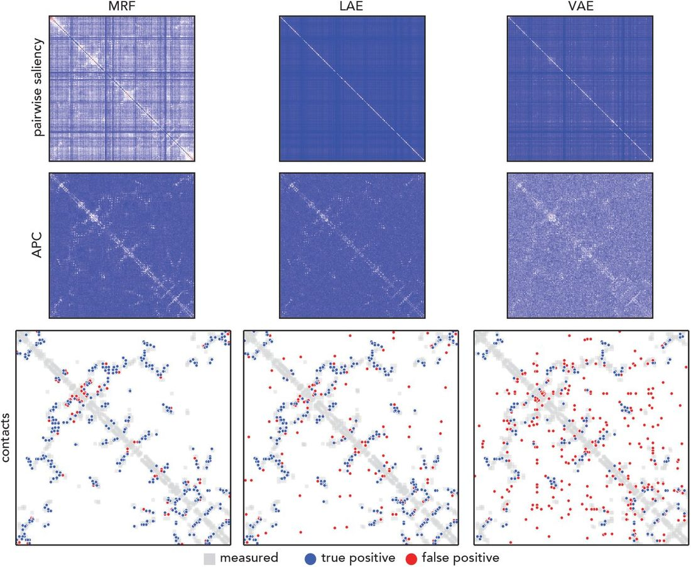
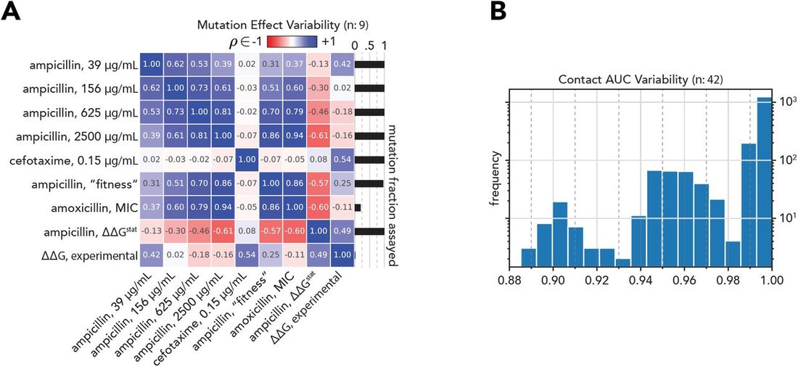
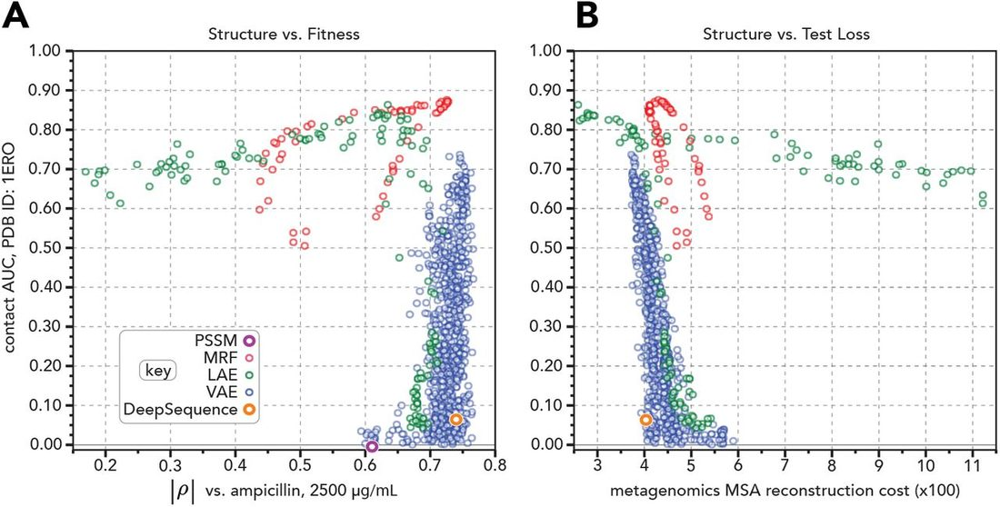

Unified Model of Protein Evolution
The structure-fitness landscape of pairwise relations in generative sequence models
Abstract
Abstract If disentangled properly, patterns distilled from evolutionarily related sequences of a given protein family can inform their traits - such as their structure and function. Recent years have seen an increase in the complexity of generative models towards capturing these patterns; from sitewise to pairwise to deep and variational. In this study we evaluate the degree of structure and fitness patterns learned by a suite of progressively complex models. We introduce pairwise saliency, a novel method for evaluating the degree of captured structural information. We also quantify the fitness information learned by these models by using them to predict the fitness of mutant sequences and then correlate these predictions against their measured fitness values. We observe that models that inform structure do not necessarily inform fitness and vice versa, contrasting recent claims in this field. Our work highlights a dearth of consistency across fitness assays as well as divergently provides a general approach for understanding the pairwise decomposable relations learned by a given generative sequence model.
1 Introduction
Inferring biophysical characteristics of a biological sequence from sequence alone is an outstanding challenge in computational biology. By comparing homologous sequences, patterns associated with such characteristics can emerge - thus allowing one to infer them if a sufficiently representative set of sequences are available. Non-exhaustively, these patterns include: conservation - per-position frequencies indicative of function; coevolution - covariation between positions often in physical residue-residue contact; and phylogeny - relationship between sequences akin to the organization of species from which the sequences were sourced. See Fig. 1A . Among other reasons, disentanglement of the origins of these patterns is desirable because better resolved coevolution and phylogeny could improve structure prediction and species delimitation, respectively. It is challenged, however, by the fact that they confound one another and is an unsolved problem of the field.

Early generative sequence models, such as Position-Specific Scoring Matrices (PSSMs) [ Stormo et al., 1982 ], were able to distinguish some functional characteristics but were limited to only considering sitewise relations. Later, Markov Random Fields (MRFs) were applied to resolve molecular coevolution by incorporating pairwise relations [ Lapedes et al., 1999 , Thomas et al., 2008 , Weigt et al., 2009 , Balakrishnan et al., 2011 , Morcos et al., 2011 , Jones et al., 2012 , de Juan et al., 2013 ]. Improvements, such as pseudolikelihood maximization [ Ekeberg et al., 2013 , Kamisetty et al., 2013 ], have since elevated MRFs, resulting in dramatically improved structure prediction. Indeed, in addition to other inputs, MRF features underpin AlphaFold, the reigning Critical Assessment of protein Structure Prediction (CASP) champion [ Senior et al., 2020 ].
Predicting the functional effect of mutant variants for a given protein by unsupervised means has seen renewed interest in recent years. The strategy entails using the aforementioned models to score mutant sequences relative to a wildtype sequence and then compare the scores against measured phenotypes of these mutants. An approach built on a coevolution model was initially proposed by Lapedes et al. [2002] to predict the thermostability of Fyn SH3 domain mutants - as quantified by ΔΔ G mutant . This idea was again demonstrated later in Figliuzzi et al. [2016] but for predicting the fitness effect of mutant TEM-1 Beta Lactamase sequences instead - as quantified by a specific enzymatic selection assay. Hopf et al. [2017] built on this, generalizing the method to more proteins. Riesselman et al. [2018] claimed state of the art performance for this task with a deep Variational Autoencoder (VAE). They also claimed that by dint of its improved performance over pairwise models that it necessarily captured higher-order dependencies. It is, however, unclear if the model is actually learning higher-order interactions or simply a mixture of PSSMs where differentially conserved functional positions - between different groups of sequences - would be expected to cluster together in the structure.
Contemporary to this, other work also applied VAEs to fitness inference. Notably, both Sinai et al. [2017] and Ding et al. [2019] allude to their VAEs capturing varying levels of conservation - within groups of phylogenetically related sequences - as opposed to coevolution. Arising from this ambiguity came a natural question: what exactly are these models learning that results in their differing ability to infer function and structure? In parallel, what role do pairwise relations play in this task?
In this work, we attempt to address these questions. We focus on the widely studied TEM-1 Beta Lactamase, the central case study of Figliuzzi et al. [2016] , Hopf et al. [2017] , and Riesselman et al. [2018] . We carefully resolve how structure and mutant fitness are related on an experimental level. We systematically evaluate a range of generative sequence models from PSSM to VAE by using them to predict these two properties for TEM-1 Beta Lactamase. We assess a wide range of model hyperparameters. We take stock of how prediction and experiment relate to one another. We observe that models perform these tasks differentially rather than commensurately. We conclude that patterns in homologous sequences that inform structure differ from those that inform fitness. Paper code: https://github.com/sokrypton/seqsal_v2 .
2 Data
Here we describe the considered sequence, structure, and fitness data of TEM-1 Beta Lactamase, the case study protein. For brevity, β ℓ := TEM-1 Beta Lactamase. β £ is an enzyme capable of hydrolyzing penicillin type β-lactam antibiotics [ Abraham and Chain, 1940 ]. It exhibits desirable features that confer greater confidence in inferring biophysical characteristics solely from homologous sequence comparison. It is monomeric, globular, purportedly singular in function, has no known cofactors, and is found primarily on plasmids [ Stiffler et al., 2015 , Naas et al., 2017 , Bush, 2018 ]. Thus, disentanglement of the structure-fitness landscape from sequence alone in this protein is less confounded than in most other proteins.
1 Training data
The β ℓ sequences were organized in a multiple sequence alignment (MSA); a set of N homologous sequences with alphabet A and length L . In one-hot encoded form: MSA:= X ∈ {0, 1} N × L × A , as shown in Fig. 1A . The set A represents the 20 amino acids as well as a category for gaps g . We sourced the MSA from Riesselman et al. [2018] , which was generated using jackhmmer [ Eddy, 2011 ] and pulled sequences from UniRef100 [ Suzek et al., 2015 ]. The reference (or query) sequence of interest r L × A ∈ X is the wildtype β ℓ sequence.
Testing data
Starting from the same reference sequence, r L×A ∈ X , we also generated another MSA Y ∈ {0, 1} N Y × L × A . HMMER [ Eddy, 2011 ] with a bit score of 27 was used to pull sequences from a metagenomics database as described in Ovchinnikov et al. [2017] .
Both datasets
For both MSAs, sequences ≥ 20% gapped positions relative to the query sequence and that shared ≥ 90% sequence identity to each other were removed. Additionally, sequences in Y sharing ≥ 90% sequence identity with any sequence in X were also removed.
2.2 Structure
A set of β ℓ labeled x-ray crystal structures was sourced from the Beta-Lactamase DataBase (BLDB) [ Naas et al., 2017 ], a manually curated collection in turn sourced from the Protein Data Bank (PDB) [ Berman et al., 2000 , Burley et al., 2019 ]. Structures were not considered further if the correspondent sequence could not be one-hot encoded given the aforementioned alphabet A , such as those with noncanonical amino acids. The resulting forty-two β ℓ structures were processed with ConFind [ Zheng et al., 2015 ] to identify physically interacting residues. Each structure is represented by a contact map, as recommended by Zheng et al. [2015] . See Fig. 1C .
2.3 Fitness
Data that assessed varying aspects of β ℓ fitness and function were collected. The nine datasets were generated by experimentally or computationally characterizing single mutant variants of the β ℓ reference sequence r L × A . These mutant sequences are defined as all possible missense mutations m for each sequence index i ∈ {1,…, L }; and more formally in one-hot encoded form,
The fitness assay datasets, denoted by , are a mapping from the mutant sequences. They represent the observed phenotypes for a given fitness assay over some subset of ,
3 Models
3.1 Generative sequence models
Inspired by Dauparas et al. [2019] , the investigated models progress in complexity from trivial to highly non-convex. A graphical schematic is shown in Fig. 1B . Each learn a different composition of biological relations within a MSA. All models f learn to reconstruct a MSA with categorical cross entropy as the minimized loss function. In the following, softmax is taken along the alphabet A axis and model weights were L 2 regularized with coefficient λ .
3.1.1 Position-Specific Scoring Matrix (PSSM)
PSSMs capture the sitewise decomposable relations within X representing evolutionary conservation [ Stormo et al., 1982 ]. They are parameterized by a bias matrix b ∈ ℝ L × A . As noted in Dauparas et al. [2019] , given the analytically derived solution for b is .
3.1.2 Markov Random Field (MRF)
MRFs with the pseudolikelihood approximation [ Balakrishnan et al., 2011 , Ekeberg et al., 2013 , Kamisetty et al., 2013 ] capture the patterns within X representing coevolution [ Lapedes et al., 1999 , Weigt et al., 2009 , Morcos et al., 2011 ]. They are parameterized by an explicitly pairwise decomposable weight matrix, W ∈ ℝ L × A × L × A , and a bias matrix, b ∈ ℝ 1× L × A . The trivial residue self-mapping is precluded by the constraint W i : i : → 0 | i ∈ {1,…, L }. Given the MRF loss function is L 2 regularized with coefficient λ
3.1.3 Linear Autoencoder (LAE)
LAEs [ Baldi and Hornik, 1989 , Kunin et al., 2019 ] are a flexible model type capable of capturing varying relations within X . In this work, they share the same framework as MRFs but differ through the inclusion of latent linear layers l . The architecture is s.t. X is first encoded to latent space , where , with encoder . Next, it is decoded to , where with decoder . Whereas the pairwise relations are explicitly parameterized in the MRF, they are unknown for the LAE. The LAE loss function is defined as
3.1.4 Variational Autoencoder (VAE)
Similar to LAEs, VAEs [ Kingma and Welling, 2013 ] are a flexible model type. In this work, they share the same framework as LAEs but differ by: using selu [ Klambauer et al., 2017 ] non-linear activation, dropout [ Srivastava et al., 2014 ], and batch normalization [ Ioffe and Szegedy, 2015 ] for and , and latent probabilistic sampling
Riesselman et al. [2018] claim the capture of triwise (or higher) relations with a VAE but do not assess its learned pairwise relations which remain unresolved. Given the VAE loss function is defined as where the Kullback-Leibler divergence regularization term is written in the alternative estimator form, as derived in Kingma and Welling [2013] .
3.2 Training approach
Models were trained to reconstruct X over a range of combinatorily sampled hyperparameters. The possible hyperparameters increase from PSSM to MRF to LAE to VAE. The PSSM was analytically solved. MRFs, which are convex, converged to a global minima. The non-convex LAEs and VAEs were trained with batch and epoch scheduling. Where applicable, L 2 regularization coefficient λ was uniformly sampled over (0, 1); the number of possible logits in spanned base 2 from 2 8 to 2 12 ; dropout was uniformly sampled over [0, 0.5]; batch sizes were scheduled in base 2 from 2 6 to 2 12 ; and number of epochs for each batch size increment was randomly chosen over a base 2 range from small 2 3 to large 2 6 . Parameters were optimized with the default Keras [ Chollet et al., 2015 ] Adam optimizer [ Kingma and Ba, 2014 ].
4 Pairwise saliency
For a given generative sequence model f , pairwise saliency P quantifies the composition of learned pairwise decomposable relations. We define P as the symmetrized Jacobian J evaluated with input 0 1× L × A . Symmetry is achieved by averaging the Jacobian and its transpose
This method is conceptually similar to linearization of a non-linear model by the first order Taylor approximation evaluated around the origin.
Resolving inter-residue contacts from pairwise decomposable relations is accomplished by a variant of Average Product Correction (APC) of P [ Dunn et al., 2008 ], which filters out low-rank artifacts. The diagonal of P before and after APC is set to 0. A visualization of the first step of APC, where the L 2 norm of P is taken over the alphabet axes A not including gaps is shown for selected MRF, LAE and VAE models in Fig. 2 ( top ). The APC of P is shown in Fig. 2 ( middle ). An overlay of the pairwise saliency derived contacts Ĉ on ground truth contacts C is shown in Fig. 2 ( bottom ).
5 Data
Quantifying structure
Contact AUC quantifies how well an alternative or predicted contact map Ĉ matches a ground truth contact map C . It is the average of the precision PPV evaluated over the highest ranking predicted contacts Ĉ ij , constrained to | i − j | > 6, in L/ 10 increments,

The degree of structural information learned for a given model f considers the APC form of the pairwise saliency matrix P .
Quantifying fitness
Fitness has many definitions across many fields. In this work, fitness is contextually defined as the mapping from each possible missense mutation per sequence index to an assay-specific scalar, , as described in Eqns 2 and 3 .
First, a trained model f reconstructs the mutant sequences . Next, the reconstruction cost is calculated with , as defined by Eqn. 4 . These are the predicted mutation effect values. Note that from an unsupervised model perspective, there can only be one prediction per mutation because reconstruction cost is a function of and not . Subsequently, predicted mutation effects are correlated against , the fitness assay datasets, via absolute value of the rank (Spearman) correlation for a selected , building on the precedent set by Hopf et al. [2017] and Riesselman et al. [2018] . See Fig. 3A .

Structure is an invariant biophysical characteristic
Contact AUC between each of the 42 β ℓ PDB structures varies minimally, with span ∈ [0.885, 1.000]. See Fig. 3B . This suggests quantifica-tion of contacts by contact AUC is not subjective for this protein.
Mutation effect informs fitness relatively
Nine mutation effect datasets interrogating function and thermostability were compared. Considering β ℓ is a penicillin hydrolyzing enzyme, any of "ampicillin, [39, 156, 625, 2500] μg/mL” [ Stiffler et al., 2015 ], “ampicillin, fitness” [ Firnberg et al., 2014 ], “amoxicillin, MIC” [ Jacquier et al., 2013 ], “ampicillin, ΔΔG stat “ [ Deng et al., 2012 ], can claim to be representative of mutation effect when the only consideration is how such mutations affects β ℓ ’s ability to hydrolyze its natural substrate. While “ampicillin, 2500 μg/mL” [ Stiffler et al., 2015 ] has been the ground truth assay of choice for previous work using unsupervised models to infer mutation effect for β ℓ [ Hopf et al., 2017 , Riesselman et al., 2018 ], and correlates strongly with “ampicillin, fitness” [ Firnberg et al., 2014 ] and “amoxicillin, MIC” [ Jacquier et al., 2013 ], it negatively correlates with “ampicillin, ΔΔG stat ” [ Deng et al., 2012 ], and variably correlates with the same assay from the same paper but at lower concentrations “ampicillin [39, 156, 625] μg/mL” [ Stiffler et al., 2015 ]. Similarly, if the consideration is instead how a mutation impacts β ℓ ’s ability to hydrolyze “cefotaxime, 0.15 μg/mL”, a different β -lactam antibiotic [ Stiffler et al., 2015 ], or thermostability [ Yang et al., 2020 ] - the outcomes also vary.
Despite being singular in purpose, to break down a single class of molecules that inhibit bacterial cell wall formation, β ℓ mutation effect varies under selection of its natural substrate. It also depends on the consistency of method for calculating mutation effect from raw allele count ratios. While this subjectivity is alluded to in previous work [ Lapedes et al., 2002 , Figliuzzi et al., 2016 , Hopf et al., 2017 , Riesselman et al., 2018 ], it was not explored in depth. It is possible there are better metrics than rank correlation for this task. We note contemporary efforts to standardize the terminology and metrics for this data type [ Esposito et al., 2019 , Dunham and Beltrao, 2020 ], but consensus has yet to emerge.
6 Results
Taking scope of the evaluated generative sequence models over a range of hyperparameters, a view of the structure-fitness landscape comes into focus. Predicted structure Ĉ is resolved through pairwise saliency P ( Eqn 5 ) and compared to ground truth by contact AUC ( Eqn 7 ). Structural ground truth is PDB ID 1ERO [ Ness et al., 2000 ]. Note that 1ERO can be substituted by any of the other structures in Fig. 3B . Predicted mutant effect function is determined by | ρ | ( Eqn 8 ). “Ampicillin, 2500 μg/mL” [ Stiffler et al., 2015 ] represents ground truth for mutant effect fitness, chosen as a consequence of precedent [ Hopf et al., 2017 , Riesselman et al., 2018 ] and also because it reasonably represents β ℓ ’s natural function. Generalizability is proxied by the reconstruction cost ( Eqn 4 ) of the predicted test data Ŷ, revealing how underfit or overfit f is on X .
Shown in Fig. 4A is the relation between task performance for the generative sequence models across the aforementioned hyperparameters. Each circle is an individual model; ensembling is not considered. By definition a PSSM, purple circle, does not capture pairwise relations. MRFs, red circles, infer structure to almost within experimental error and infer fitness decently. LAEs, green circles, span the spectrum of both tasks, but not as well as MRFs for structure or VAEs for fitness. VAEs, blue circles, learn fitness well and learn structure variably. Also plotted is DeepSequence [ Riesselman et al., 2018 ] for comparison, orange circle, reproduced from weights provided online. Shown in Fig. 4B is the relation between learned structure and test loss. Note that arg max f (contact AUC) = arg max f (test loss) for both LAE and VAE.

We therefore conclude that models can infer structure and fitness differentially. We also conclude that within each model category, models that best reconstruct the test data tend to learn contacts the best.
7 Discussion
In this investigation on the structure-fitness landscape of TEM-1 Beta Lactamase, we clarify the relationship between model parameterization and captured biological information for a suite of progressively complex generative sequence models. We introduce a novel method, pairwise saliency, to reveal the degree of structure they have learned. We also assess their capacity to infer fitness, proxied by the measured effect of mutant sequences. Surprisingly, we find that models can learn one task and not the other. It is possible pairwise saliency insufficiently resolves learned contacts for complex models. It is also possible the mutant effect data does not represent the aggregate evolutionary pressures etched into the patterns found across homologous β ℓ sequences. We are also left wondering how relevant intra-sequence dependencies are for fitness inference in an unsupervised framework.
We suspect that models that infer mutation effect well but structure poorly are learning mixture models, where each group of sequences emit a single sequence profile. From our analyses, it seems possible to create a hybrid model that learns both coevolution along with a hierarchical mixture bias term for phylogeny. Such a model could both better predict structure as well as more accurately delimit clades within the tree of life. It is also unclear what, exactly, higher-order relations are - as previous work claims to have captured [ Riesselman et al., 2018 ]. Is it possible that phylogeny itself are the higher-order relations in question? Previous work has shown that active sites within proteins can be predicted by scoring how well each position of a multiple sequence alignment agrees with the overall phylogenetic gene tree [ La et al., 2005 ].
Model interpretability continues to be a heavily debated topic that lacks consensus [ Gilpin et al., 2018 ]. This in mind we simply propose pairwise saliency merely as a starting point for further study into the disentangled relations resolved from generative sequence models. Indeed, immediately pursued next steps include but are not limited to: factorizing the sitewise terms that are theoretically confounding pairwise saliency, utilizing the Hessian towards distinguishing triwise decomposable relations, and perhaps even applying it to large natural language processing based protein sequence models that are currently in vogue [ Rao et al., 2019 , Alley et al., 2019 , Rives et al., 2019 , Elnaggar et al., 2020 ].
References
- ↵ E P Abraham and E Chain . An enzyme from bacteria able to destroy penicillin . Nature , 146 ( 3713 ): 837 – 837 , December 1940 . OpenUrl CrossRef
- ↵ Ethan C Alley , Grigory Khimulya , Surojit Biswas , Mohammed AlQuraishi , and George M Church . Unified rational protein engineering with sequence-based deep representation learning . Nat. Methods , 16 ( 12 ): 1315 – 1322 , December 2019 . OpenUrl
- ↵ Sivaraman Balakrishnan , Hetunandan Kamisetty , Jaime G Carbonell , Su-In Lee , and Christopher James Langmead. Learning generative models for protein fold families . Proteins , 79 (4): 1061 – 1078 , April 2011 . OpenUrl CrossRef PubMed Web of Science
- ↵ Pierre Baldi and Kurt Hornik . Neural networks and principal component analysis: Learning from examples without local minima . Neural Netw. , 2 ( 1 ): 53 – 58 , January 1989 . OpenUrl CrossRef Web of Science
- ↵ H M Berman J Westbrook , Z Feng , G Gilliland , T N Bhat , H Weissig , I N Shindyalov , and P E Bourne . The protein data bank . Nucleic Acids Res. , 28 ( 1 ): 235 – 242 , January 2000 . OpenUrl CrossRef PubMed Web of Science
- ↵ Stephen K Burley , Helen M Berman , Charmi Bhikadiya , Chunxiao Bi , Li Chen , Luigi Di Costanzo , Cole Christie , Ken Dalenberg , Jose M Duarte , Shuchismita Dutta , Zukang Feng , Sutapa Ghosh , David S Goodsell , Rachel K Green Vladimir Guranovic , Dmytro Guzenko , Brian P Hudson Tara Kalro , Yuhe Liang , Robert Lowe , Harry Namkoong , Ezra Peisach , Irina Periskova , Andreas Prlic , Chris Randle , Alexander Rose , Peter Rose , Raul Sala , Monica Sekharan , Chenghua Shao , Lihua Tan , Yi-Ping Tao , Yana Valasatava , Maria Voigt , John Westbrook , Jesse Woo , Huanwang Yang , Jasmine Young , Marina Zhuravleva , and Christine Zardecki . RCSB protein data bank: biological macromolecular structures enabling research and education in fundamental biology, biomedicine, biotechnology and energy . Nucleic Acids Res. , 47 ( D1 ): D464 – D474 , January 2019 . OpenUrl CrossRef PubMed
- ↵ Karen Bush . Past and present perspectives on β -Lactamases . Antimicrob. Agents Chemother ., 62 ( 10 ), October 2018 .
- ↵ François Chollet et al. Keras . https://keras.io , 2015 .
- ↵ Justas Dauparas , Haobo Wang , Avi Swartz , Peter Koo , Mor Nitzan , and Sergey Ovchinnikov . Unified framework for modeling multivariate distributions in biological sequences . June 2019 .
- ↵ David de Juan , Florencio Pazos , and Alfonso Valencia . Emerging methods in protein co-evolution . Nat. Rev. Genet. , 14 ( 4 ): 249 – 261 , April 2013 . OpenUrl CrossRef PubMed
- ↵ Zhifeng Deng , Wanzhi Huang , Erol Bakkalbasi , Nicholas G Brown Carolyn J Adamski Kacie Rice , Donna Muzny , Richard A Gibbs and Timothy Palzkill . Deep sequencing of systematic combinatorial libraries reveals β -lactamase sequence constraints at high resolution . J. Mol. Biol. , 424 (3-4): 150 – 167 , December 2012 . OpenUrl CrossRef PubMed
- ↵ Xinqiang Ding , Zhengting Zou , and Charles L Brooks III . Deciphering protein evolution and fitness landscapes with latent space models . Nat. Commun. , 10 ( 1 ): 5644 , December 2019 . OpenUrl
- ↵ Alistair Dunham and Pedro Beltrao . Exploring amino acid functions in a deep mutational landscape . May 2020 .
- ↵ S D Dunn L M Wahl and G B Gloor . Mutual information without the influence of phylogeny or entropy dramatically improves residue contact prediction . Bioinformatics , 24 ( 3 ): 333 – 340 , February 2008 . OpenUrl CrossRef PubMed Web of Science
- ↵ Sean R Eddy . Accelerated profile HMM searches . PLoS Comput. Biol. , 7 ( 10 ): e1002195 , October 2011 . OpenUrl CrossRef PubMed
- ↵ Magnus Ekeberg , Cecilia Lövkvist , Yueheng Lan , Martin Weigt , and Erik Aurell . Improved contact prediction in proteins: using pseudolikelihoods to infer potts models . Phys. Rev. E Stat. Nonlin. Soft Matter Phys. , 87 ( 1 ): 012707 , January 2013 . OpenUrl CrossRef PubMed
- ↵ Ahmed Elnaggar , Michael Heinzinger , Christian Dallago , Ghalia Rihawi , Yu Wang , Llion Jones , Tom Gibbs , Tamas Feher , Christoph Angerer , Martin Steinegger , Debsindhu Bhowmik , and Burkhard Rost . ProtTrans: Towards cracking the language of life’s code through Self-Supervised deep learning and high performance computing . July 2020 .
- ↵ Daniel Esposito , Jochen Weile , Jay Shendure , Lea M Starita , Anthony T Papenfuss Frederick P Roth Douglas M Fowler and Alan F Rubin . MaveDB: an open-source platform to distribute and interpret data from multiplexed assays of variant effect . Genome Biol. , 20 ( 1 ): 223 , November 2019 . OpenUrl CrossRef
- ↵ Matteo Figliuzzi , Hervé Jacquier , Alexander Schug , Oliver Tenaillon , and Martin Weigt . Coevolutionary landscape inference and the Context-Dependence of mutations in Beta-Lactamase TEM-1 . Mol. Biol. Evol. , 33 ( 1 ): 268 – 280 , January 2016 . OpenUrl CrossRef PubMed
- ↵ Elad Firnberg , Jason W Labonte Jeffrey J Gray and Marc Ostermeier . A comprehensive, high-resolution map of a gene’s fitness landscape . Mol. Biol. Evol. , 31 ( 6 ): 1581 – 1592 , June 2014 . OpenUrl CrossRef PubMed Web of Science
- ↵ L H Gilpin D Bau , B Z Yuan A Bajwa , M Specter , and L Kagal . Explaining explanations: An overview of interpretability of machine learning . In 2018 IEEE 5th International Conference on Data Science and Advanced Analytics (DSAA) , pages 80 – 89 , October 2018 .
- ↵ Thomas A Hopf John B Ingraham Frank J Poelwijk Charlotta P I Schärfe , Michael Springer , Chris Sander , and Debora S Marks . Mutation effects predicted from sequence co-variation . Nat. Biotechnol. , 35 ( 2 ): 128 – 135 , February 2017 . OpenUrl CrossRef PubMed
- ↵ Sergey Ioffe and Christian Szegedy . Batch normalization: Accelerating deep network training by reducing internal covariate shift . February 2015 .
- ↵ Hervé Jacquier , André Birgy , Hervé Le Nagard , Yves Mechulam , Emmanuelle Schmitt , Jérémy Glodt , Beatrice Bercot , Emmanuelle Petit , Julie Poulain , Guilène Barnaud , Pierre-Alexis Gros , and Olivier Tenaillon . Capturing the mutational landscape of the beta-lactamase TEM-1 . Proc. Natl. Acad. Sci. U. S. A. , 110 ( 32 ): 13067 – 13072 , August 2013 . OpenUrl Abstract / FREE Full Text
- ↵ David T Jones Daniel W A Buchan Domenico Cozzetto , and Massimiliano Pontil . PSICOV: precise structural contact prediction using sparse inverse covariance estimation on large multiple sequence alignments . Bioinformatics , 28 ( 2 ): 184 – 190 , January 2012 . OpenUrl CrossRef PubMed Web of Science
- ↵ Hetunandan Kamisetty , Sergey Ovchinnikov , and David Baker . Assessing the utility of coevolution-based residue-residue contact predictions in a sequence-and structure-rich era . Proc. Natl. Acad. Sci. U. S. A. , 110 ( 39 ): 15674 – 15679 , September 2013 . OpenUrl Abstract / FREE Full Text
- ↵ Diederik P Kingma and Jimmy Ba . Adam: A method for stochastic optimization . December 2014 .
- ↵ Diederik P Kingma and Max Welling . Auto-Encoding variational bayes . December 2013 .
- ↵ Günter Klambauer , Thomas Unterthiner , Andreas Mayr , and Sepp Hochreiter . Self-Normalizing neural networks . June 2017 .
- ↵ Daniel Kunin , Jonathan M Bloom Aleksandrina Goeva , and Cotton Seed . Loss landscapes of regularized linear autoencoders . January 2019 .
- ↵ David La , Brian Sutch , and Dennis R Livesay . Predicting protein functional sites with phylogenetic motifs . Proteins , 58 ( 2 ): 309 – 320 , February 2005 . OpenUrl CrossRef PubMed Web of Science
- ↵ Alan Lapedes , Bertrand Giraud , and Christopher Jarzynski . Using sequence alignments to predict protein structure and stability with high accuracy . July 2002 .
- ↵ Alan S Lapedes Bertrand G. Giraud , LonChang Liu , and Gary D Stormo . Correlated mutations in models of protein sequences: Phylogenetic and structural effects . Lect. Notes Monogr. Ser. , 33 : 236 – 256 , 1999 . OpenUrl
- ↵ Faruck Morcos , Andrea Pagnani , Bryan Lunt , Arianna Bertolino , Debora S Marks Chris Sander , Riccardo Zecchina , José N Onuchic , Terence Hwa , and Martin Weigt . Direct-coupling analysis of residue coevolution captures native contacts across many protein families . Proc. Natl. Acad. Sci. U. S. A. , 108 ( 49 ):E 1293 – 301 , December 2011 . OpenUrl CrossRef
- ↵ Thierry Naas , Saoussen Oueslati , Rémy A Bonnin , Maria Laura Dabos , Agustin Zavala , Laurent Dortet , Pascal Retailleau , and Bogdan I Iorga . Beta-lactamase database (BLDB) - structure and function . J. Enzyme Inhib. Med. Chem. , 32 ( 1 ): 917 – 919 , December 2017 . OpenUrl CrossRef PubMed
- ↵ S Ness , R Martin , A M Kindler M Paetzel , M Gold , S E Jensen J B Jones and N C Strynadka . Structure-based design guides the improved efficacy of deacylation transition state analogue inhibitors of TEM-1 beta-lactamase(,) . Biochemistry , 39 ( 18 ): 5312 – 5321 , May 2000 . OpenUrl CrossRef PubMed
- ↵ Sergey Ovchinnikov , Hahnbeom Park , Neha Varghese , Po-Ssu Huang , Georgios A Pavlopoulos David E Kim Hetunandan Kamisetty , Nikos C Kyrpides and David Baker . Protein structure determination using metagenome sequence data . Science , 355 ( 6322 ): 294 – 298 , January 2017 . OpenUrl Abstract / FREE Full Text
- ↵ H Wallach H Larochelle , A Beygelzimer , F dAlché-Buc , E Fox , and R Garnett Roshan Rao , Nicholas Bhattacharya , Neil Thomas , Yan Duan , Peter Chen , John Canny , Pieter Abbeel , and Yun Song . Evaluating protein transfer learning with TAPE . In H Wallach H Larochelle , A Beygelzimer , F dAlché-Buc , E Fox , and R Garnett , editors, Advances in Neural Information Processing Systems 32 , pages 9689 – 9701 . Curran Associates, Inc ., 2019 . OpenUrl
- ↵ Adam J Riesselman John B Ingraham and Debora S Marks . Deep generative models of genetic variation capture the effects of mutations . Nat. Methods , 15 ( 10 ): 816 – 822 , October 2018 . OpenUrl
- ↵ Alexander Rives , Joshua Meier , Tom Sercu , Siddharth Goyal , Zeming Lin , Demi Guo , Myle Ott , C Lawrence Zitnick Jerry Ma , and Rob Fergus . Biological structure and function emerge from scaling unsupervised learning to 250 million protein sequences . April 2019 .
- ↵ Andrew W Senior Richard Evans , John Jumper , James Kirkpatrick , Laurent Sifre , Tim Green , Chongli Qin , Augustin Žídek , Alexander W R Nelson Alex Bridgland , Hugo Penedones , Stig Petersen , Karen Simonyan , Steve Crossan , Pushmeet Kohli , David T Jones David Silver , Koray Kavukcuoglu , and Demis Hassabis . Improved protein structure prediction using potentials from deep learning . Nature , January 2020 .
- ↵ Sam Sinai , Eric Kelsic , George M Church and Martin A Nowak . Variational auto-encoding of protein sequences . December 2017 .
- ↵ Nitish Srivastava , Geoffrey Hinton , Alex Krizhevsky , Ilya Sutskever , and Ruslan Salakhutdinov . Dropout: A simple way to prevent neural networks from overfitting . J. Mach. Learn. Res. , 15 : 1929 – 1958 , 2014 . OpenUrl CrossRef
- ↵ Michael A Stiffler Doeke R Hekstra and Rama Ranganathan . Evolvability as a function of purifying selection in TEM-1 β -lactamase . Cell , 160 ( 5 ): 882 – 892 , February 2015 . OpenUrl CrossRef PubMed
- ↵ G D Stormo T D Schneider L Gold , and A Ehrenfeucht . Use of the ‘perceptron’ algorithm to distinguish translational initiation sites in e. coli . Nucleic Acids Res. , 10 ( 9 ): 2997 – 3011 , May 1982 . OpenUrl CrossRef PubMed Web of Science
- ↵ Baris E Suzek Yuqi Wang , Hongzhan Huang , Peter B McGarvey Cathy H Wu and UniProt Consortium . UniRef clusters: a comprehensive and scalable alternative for improving sequence similarity searches . Bioinformatics , 31 ( 6 ): 926 – 932 , March 2015 . OpenUrl CrossRef PubMed
- ↵ John Thomas , Naren Ramakrishnan , and Chris Bailey-Kellogg . Graphical models of residue coupling in protein families . IEEE/ACM Trans. Comput. Biol. Bioinform. , 5 ( 2 ): 183 – 197 , April 2008 . OpenUrl PubMed
- ↵ Martin Weigt , Robert A White Hendrik Szurmant , James A Hoch and Terence Hwa . Identification of direct residue contacts in protein-protein interaction by message passing . Proc. Natl. Acad. Sci. U. S. A. , 106 ( 1 ): 67 – 72 , January 2009 . OpenUrl Abstract / FREE Full Text
- ↵ Jordan Yang , Nandita Naik , Jagdish Suresh Patel Christopher S Wylie Wenze Gu , Jessie Huang , F Marty Ytreberg Mandar T Naik Daniel M Weinreich and Brenda M Rubenstein . Predicting the viability of beta-lactamase: How folding and binding free energies correlate with beta-lactamase fitness . PLoS One , 15 ( 5 ): e0233509 , May 2020 . OpenUrl CrossRef
- ↵ Fan Zheng , Jian Zhang , and Gevorg Grigoryan . Tertiary structural propensities reveal fundamental sequence/structure relationships . Structure , 23 ( 5 ): 961 – 971 , May 2015 . OpenUrl CrossRef PubMed